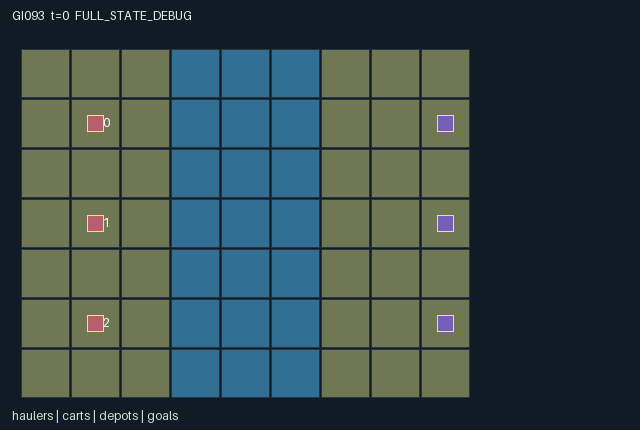

GI093 / SPATIAL
栈桥公地
各方搭建、维修并共用易损桥梁；载货过桥消耗更多耐久，拥堵会改变通路。
Original saved demonstration
Recorded native state, often authored scripts or interventions; information scope and failures are preserved in the original provenance. This is a saved demonstration, not live browser play.

Release verification episode
Untrained uniform legal actions. Actual JAX state sampled along the full original episode; full-state debug camera. No human performance or learning claim.

Run this game
crucibles play --game 93
Start Python locally, then open the address printed by the terminal. Installation, multiplayer, takeover and keyboard controls →
Objective, rewards & ending
Exact task contract
{
"objective": "Move each role's actual cart from the western bank to its matching eastern goal, while deciding whether to pool construction resources, share bridges, maintain access or pursue toll income.",
"natural_termination": "All three carts delivered ends naturally. A cart delivery rewards its owner +1 and each other role +0.25. A crossing of another role's owned bridge transfers 1/32 reward from traveler to owner. Otherwise truncate at step 128.",
"interaction": "Any role may use a live bridge. Entering wears it by one, or two when hauling a cart; depleted occupied remnants permit departure but block new entry. Ownership allocates real payoff transfers, while maintenance, public access, shared depots and material handoffs change others' later route opportunities.",
"observation_access": "All terrain, bridge states and ownership, cargo positions, worker resources, depot stock and goal identities are public. Entity visibility is true for all roles. Public observation contains the entire dynamic infrastructure state and net toll ledgers."
}Declared per-step reward bounds: -1 to 2. Observability: fully_observable.
Rules
- River cells x=3..5 require constructed bridges. Anyone may enter a bridge with positive durability; simultaneous congestion can block a route.
- A new front bridge costs two wood and starts at durability four. Repair costs one wood and adds two durability, up to four.
- Entering consumes one durability, or two with a cart. A depleted occupied remnant supports only departure; once vacated it disappears unless repaired.
- Crossing someone else's owned bridge transfers 1/32 reward to its owner. Owners can waive future tolls or salvage their unoccupied bridge.
- Deliver your own cart for +1; each partner gains +0.25. All three deliveries end play; all roles can keep assisting after their own delivery.
Original mechanism document (historical status wording retained)
# Trestle Commons: Roads and Rivalry
Status: **AUTHORED_NOT_EXECUTED**. Candidate `game-v3-00093`, attempt 00; train-only prospective source. A/O/U/H = 3/224/11/128. Source SHA256: `27b76e957066e5558ac1617ceaf024d154cc42b45f8a5642f46197e6d74a90d2`.
Original mixed-interest infrastructure game with real cart positions, a three-cell-wide river, shared-access bridges, congestion, hauling-dependent wear and ownership tolls. Every constructed segment can affect other roles' later travel and payoff.
## Literal rules and transition order
1. Three roles start with their own carts at (1,1),(1,3),(1,5), four wood each, and matching goals at (8,1),(8,3),(8,5). Three depots at the starting cells hold four additional units each and can be used by any role within Manhattan distance one. The river is columns 3,4,5 across all seven rows.
2. All in-range IDs are legal attempts while live; unmet interaction conditions cause no effect. Out-of-range IDs become wait. Only wait is legal after joint completion. A role whose own cart has arrived remains active for maintenance, material transfers and assistance.
3. Directional actions also set facing. River entry requires a positive-durability bridge in the old state. Occupancy of another role's old cell blocks movement, so swaps and immediate following are blocked. Competing proposals for an unoccupied cell are resolved by clock-rotated role priority.
4. Entering a bridge uses one durability, or two while carrying a cart. Entry into another role's owned segment transfers one toll unit from traveler to owner. The toll uses ownership before construction/waiver actions on that step. Each unit is returned as reward 1/32 and recorded in the actual cumulative credits state.
5. Build/repair acts on the front river cell. A new empty segment costs two wood, sets strength four and ownership to the builder. A live or occupied-remnant segment can be repaired for one wood, adding two strength up to four while retaining ownership. The shared segment remains usable by all roles.
6. An exhausted segment occupied by a hauler stays visible as pending=true and durability zero. Its current occupant can leave toward passable ground/another live segment; no newcomer can enter. If it is vacated without repair, it disappears and loses ownership. This avoids instant removal under the occupying hauler without granting free future crossings.
7. Give transfers one wood to a neighboring role below capacity six. Refill takes one from an eligible finite depot. Clock-rotated interaction processing gives a literal resolution order for simultaneous claims. Salvage is restricted to one's own unoccupied live front segment and returns at most one wood; waive removes ownership but preserves the route.
8. Action 6 drops a carried personal cart or picks it up from the current cell. A carried cart follows its owner's real movement; a dropped cart remains in place. Arrival while carrying at the role's matching goal delivers it automatically. Cargo capacity is one personal cart per role.
9. Each new delivery gives its owner one reward and the other roles one quarter each. Tolls sum to zero across roles; delivery benefits create a shared interest in finishing while ownership, wear and congestion create rivalry. The raw game ends naturally only after all three deliveries.
## Cross-agent consequences and untested paired interventions
- A builder's front-cell construction changes whether another role's later east/west move succeeds. The same later crossing reduces that segment's remaining capacity for a third role.
- Changing a first traveler from unloaded to cart-carrying changes wear from one to two. A later traveler may face a missing bridge and need the first role or another builder to maintain it.
- Waiving ownership changes future crossing rewards while preserving geometry; salvaging removes both access and potential toll income. A material handoff can enable a teammate to restore a route that the donor cannot currently reach.
- A worker waiting in a one-cell bridge segment can block the next hauler despite an otherwise valid bridge. Parallel construction avoids that crowding but consumes additional shared materials.
These are consequences derived from source inspection and proposed intervention traces. No paired-action execution or strategic-richness acceptance has been performed by the author.
## Partner-dependent strategies and possible variation
Unmeasured alternatives include pooled construction of one maintained common crossing, separate personal bridges, unloaded scouting and supply shuttles before hauling, toll-earning maintenance, or public access waivers to encourage cooperation. A fast first crossing can strand followers through wear; initial builders need not be the eventual maintenance beneficiaries.
Future separately authorized variants could change river width, wear, private delivery values, toll rates or depot allocation. These could alter sharing versus parallel construction incentives, but this source makes no measured strategic-richness, learning or transfer claim.
## Information, rendering and invariants
All terrain, bridge states and ownership, cargo positions, worker resources, depot stock and goal identities are public. Entity visibility is true for all roles. Public observation contains the entire dynamic infrastructure state and net toll ledgers.
The scene contains no executable rendering code. Its world, entity groups, attribute labels, event semantics, actions and observation labels are copied from this package's own manifest declarations. Visible positions bind directly to state arrays used in transitions. Inactive delivered objects are hidden as declared; the privileged debug state must be labelled separately from each role view. Events are last-transition flags, not cumulative event counts. The absorbing terminal keeps the final flags frozen; a repeated terminal call is not a newly occurring game event.
All agent/cart positions stay in x=0..8,y=0..6 and agent positions are unique. Wood 0..6, bridge durability 0..4, owners -1..2, depot stock 0..4. A role pays at most one toll or receives at most two per live step, so credits are within [-128,256]; normalized observations stay in [-1,1]. Rewards are bounded by [-1,2] conservatively.
All integer state fields use int32, all logical leaves bool, and returned observations/rewards float32. No key is duplicated in state. This particular source is deterministic and does not use the supplied stochastic key. Normalization uses powers of two. These are design and source properties, not an eager/JIT parity receipt.
## Terminal and integration contract
A live input increments scalar int32 t exactly once. Natural completion takes priority on the horizon: truncated is (next_t >= H) AND NOT terminated. episode_done equals terminated OR truncated. A terminal input returns the identical state/observation/clock, zero rewards, all dones true and the preserved natural/truncated cause. There is no reset inside raw_step. A trusted outer wrapper owns reset. Native learning receives only observe(state) and legal_actions(state).
The kernel is the homogeneous array boundary. A community JaxMARL dictionary adapter with per-agent dictionaries and __all__ is a separate coordinator-owned integration layer; its existence or correctness is not asserted by this source package. Completed individual deliveries do not remove a role from the joint action interface.
## Source line evidence
`candidate.py`, lines 12-16 (original_river_and_actual_carts):
```python
# EVIDENCE: original_river_and_actual_carts
terrain = jnp.zeros((7, 9), dtype=jnp.int32).at[:, 3:6].set(1)
bridge_pos = jnp.stack((3 + jnp.mod(jnp.arange(21), 3), jnp.arange(21) // 3), axis=1).astype(jnp.int32)
start = jnp.array([[1, 1], [1, 3], [1, 5]], dtype=jnp.int32)
state = {
```
`candidate.py`, lines 58-62 (public_infrastructure_observation):
```python
# EVIDENCE: public_infrastructure_observation
public = jnp.concatenate((
state["agent_pos"].reshape(-1).astype(jnp.float32) / 16.0,
state["wood"].astype(jnp.float32) / 8.0,
state["facing"].astype(jnp.float32) / 4.0,
```
`candidate.py`, lines 90-94 (constructed_passability_and_congestion):
```python
# EVIDENCE: constructed_passability_and_congestion
target_bridges = jnp.all(target[:, None, :] == state["bridge_pos"][None, :, :], axis=2)
supported = jnp.any(target_bridges & (state["durability"] > 0)[None, :], axis=1)
water_target = state["map"][target[:, 1], target[:, 0]] == 1
occupied = jnp.any(jnp.all(target[:, None, :] == old[None, :, :], axis=2) & (ids[:, None] != ids[None, :]), axis=1)
```
`candidate.py`, lines 100-104 (ownership_tolls_and_cart_wear):
```python
# EVIDENCE: ownership_tolls_and_cart_wear
entered = moved[:, None] & jnp.all(pos[:, None, :] == state["bridge_pos"][None, :, :], axis=2)
bridge_index = jnp.argmax(entered, axis=1).astype(jnp.int32)
owner_at_entry = state["bridge_owner"][bridge_index]
toll = jnp.any(entered, axis=1) & (owner_at_entry >= 0) & (owner_at_entry != ids)
```
`candidate.py`, lines 120-124 (lasting_construction_maintenance_and_access):
```python
# EVIDENCE: lasting_construction_maintenance_and_access
for k in range(3):
i = jnp.mod(k + state["t"], 3)
b = front_index[i]
existing = (durability[b] > 0) | bridge_occupied[b]
```
`candidate.py`, lines 156-160 (deliveries_mix_shared_and_private_payoffs):
```python
# EVIDENCE: deliveries_mix_shared_and_private_payoffs
pickup = (a == 6) & ~state["carried"] & ~state["delivered"] & jnp.all(pos == state["cargo_pos"], axis=1)
drop = (a == 6) & state["carried"]
carried = (state["carried"] & ~drop) | pickup
cargo_pos = jnp.where((state["carried"] | carried)[:, None], pos, state["cargo_pos"])
```
`candidate.py`, lines 170-174 (natural_priority_absorbing_terminal):
```python
# EVIDENCE: natural_priority_absorbing_terminal
n = dict(state)
n["t"] = state["t"] + 1
n["agent_pos"] = pos
n["wood"] = wood
```
## Supplied community references and originality
- [JaxMARL_README.md](https://github.com/bold-lab-ai/JaxMARL/blob/main/README.md) — Read supplied Quick Start/API text: parallel agent-keyed dictionaries and __all__ are an external adapter target; no upstream environment source or layout copied. Supplied-file SHA256: `6649d04f5ed05d620e78e8416a00d4db841cf2633ae60fdb3c9729e037a71c15`.
- [Pgx_README.md](https://github.com/sotetsuk/pgx/blob/main/README.md) — Read supplied Usage/API v2 text: JAX-native state transitions, explicit legal masks and caller-provided stochastic keys. No board rules, implementation or rendering copied. Supplied-file SHA256: `153f44999e55d5df3e51e13dee6ef418cc9704ddfa26206f1dc5789b9cbbf8df`.
- [Craftax_README.md](https://github.com/MichaelTMatthews/Craftax/blob/main/README.md) — Read supplied description, Basic Usage and reset discussion for spatial resource consequences and environment/algorithm separation. No game mechanics implementation, assets or layout copied. Supplied-file SHA256: `7f9757a2047143cf183f7e2e84851a740f386af80dbee050c89b316d66a3d3ff`.
- [PureJaxRL_README.md](https://github.com/luchris429/purejaxrl/blob/main/README.md) — Read supplied Code Philosophy and overview: single-file end-to-end JAX learning implementations are algorithm references, not a new game library. No learning code imported, copied or run. Supplied-file SHA256: `d5f40182c924a42cec820931e61a7d5070e48c4c8413c7d16455abc6ea0ef6b0`.
Only the supplied static README copies were consulted. The supplied Craftax PPO recurrent baseline was not read or used. Craftax is the game/mechanics reference; Pgx is a discrete-game API reference; PureJaxRL and the unconsulted PPO baseline are algorithm/integration references. No upstream code, benchmark layout, heldout implementation, project result, prior candidate, model call or network request was used. Common interface and terminal code here implements the supplied author contract, not an imported environment.
## Playthrough limits
`playthrough.json` is a fixed, in-range joint-action script with a reset seed. Every in-range attempt is legal while live. A replay driver must stop on done_all; only wait is legal afterward. Objectives and events in that file are intended hypotheses, not observations. The script is not a policy, solvability proof or success certificate. Candidate imports, reset/step calls, validators, JIT/vmap, training and rendering were not executed by this author. Root independently accepts or rejects the entire sealed batch after delivery.
Commands
Roles & abilities
agent_0 Northern hauler and builder; own cart goal is (8,1)
agent_1 Central hauler and builder; own cart goal is (8,3)
agent_2 Southern hauler and builder; own cart goal is (8,5)
Observation permissions
Training receives only the original observation rows. Role cameras use declared visibility; debug cameras are explicitly marked. Local benchmark records log debug exposure and role takeover history.
Exact observation layout
[
{
"slice": [
0,
3
],
"meaning": "Own role identity one-hot",
"visibility": "self"
},
{
"slice": [
3,
9
],
"meaning": "All hauler xy positions divided by 16",
"visibility": "public"
},
{
"slice": [
9,
12
],
"meaning": "Carried wood divided by 8",
"visibility": "public"
},
{
"slice": [
12,
15
],
"meaning": "Facing action IDs divided by 4",
"visibility": "public"
},
{
"slice": [
15,
18
],
"meaning": "Cumulative net toll units divided by 256",
"visibility": "public"
},
{
"slice": [
18,
21
],
"meaning": "Own-cart carrying flags for all haulers",
"visibility": "public"
},
{
"slice": [
21,
84
],
"meaning": "Public terrain flattened yx; zero bank, one river",
"visibility": "public"
},
{
"slice": [
84,
126
],
"meaning": "All potential bridge cell positions flattened xy divided by 16",
"visibility": "public"
},
{
"slice": [
126,
147
],
"meaning": "Bridge durability divided by 4",
"visibility": "public"
},
{
"slice": [
147,
168
],
"meaning": "Bridge owner plus one divided by 4; zero is public/unowned",
"visibility": "public"
},
{
"slice": [
168,
189
],
"meaning": "Occupied zero-strength remnant flags",
"visibility": "public"
},
{
"slice": [
189,
195
],
"meaning": "Actual cart positions xy divided by 16",
"visibility": "public"
},
{
"slice": [
195,
198
],
"meaning": "Cart delivery flags",
"visibility": "public"
},
{
"slice": [
198,
204
],
"meaning": "Depot positions xy divided by 16",
"visibility": "public"
},
{
"slice": [
204,
207
],
"meaning": "Finite depot supplies divided by 4",
"visibility": "public"
},
{
"slice": [
207,
213
],
"meaning": "Matching goal positions xy divided by 16",
"visibility": "public"
},
{
"slice": [
213,
214
],
"meaning": "Clock divided by 128",
"visibility": "public"
},
{
"slice": [
214,
221
],
"meaning": "Last-step flags: build, repair, transfer, salvage, waive, toll, delivery",
"visibility": "public"
},
{
"slice": [
221,
224
],
"meaning": "Joint done, natural termination, truncation",
"visibility": "public"
}
]Entity visibility & attributes
[
{
"id": "haulers",
"kind": "agent",
"count": 3,
"position": [
"agent_pos"
],
"active": [
"agent_active"
],
"visibility": [
"agent_visible"
],
"attributes": [
{
"state_path": [
"wood"
],
"meaning": "Carried construction material, capacity six",
"display": "bar"
},
{
"state_path": [
"facing"
],
"meaning": "Direction 1 north, 2 east, 3 south, 4 west",
"display": "category"
},
{
"state_path": [
"credits"
],
"meaning": "Cumulative net toll units, each unit is reward 1/32",
"display": "number"
},
{
"state_path": [
"carried"
],
"meaning": "Currently carrying own cart",
"display": "flag"
}
]
},
{
"id": "bridges",
"kind": "gate",
"count": 21,
"position": [
"bridge_pos"
],
"active": [
"bridge_active"
],
"visibility": [
"bridge_visible"
],
"attributes": [
{
"state_path": [
"durability"
],
"meaning": "Remaining crossing durability, zero to four",
"display": "bar"
},
{
"state_path": [
"bridge_owner"
],
"meaning": "Toll recipient role, -1 for public/unowned",
"display": "category"
},
{
"state_path": [
"pending"
],
"meaning": "Zero-strength occupied remnant: allows current occupant to leave, blocks entry",
"display": "flag"
}
]
},
{
"id": "carts",
"kind": "object",
"count": 3,
"position": [
"cargo_pos"
],
"active": [
"cargo_active"
],
"visibility": [
"cargo_visible"
],
"attributes": [
{
"state_path": [
"cargo_owner"
],
"meaning": "Role permitted to carry this cart",
"display": "category"
},
{
"state_path": [
"carried"
],
"meaning": "Whether owner is carrying this cart",
"display": "flag"
},
{
"state_path": [
"delivered"
],
"meaning": "Whether cart has reached its matching goal",
"display": "flag"
}
]
},
{
"id": "depots",
"kind": "resource",
"count": 3,
"position": [
"depot_pos"
],
"active": [
"depot_active"
],
"visibility": [
"depot_visible"
],
"attributes": [
{
"state_path": [
"supply"
],
"meaning": "Finite material remaining; accessible to any nearby role",
"display": "number"
}
]
},
{
"id": "goals",
"kind": "landmark",
"count": 3,
"position": [
"goal_pos"
],
"active": [
"goal_active"
],
"visibility": [
"goal_visible"
],
"attributes": [
{
"state_path": [
"goal_owner"
],
"meaning": "Role whose cart belongs at this goal",
"display": "category"
}
]
}
]Actual verification & provenance
Per-game execution receipt
{
"game": "gi093",
"status": "PASS",
"verification_revision": 2,
"source_sha256": "27b76e957066e5558ac1617ceaf024d154cc42b45f8a5642f46197e6d74a90d2",
"seed": 20261101,
"runtime": {
"jax": "0.4.38",
"numpy": "1.26.4",
"devices": [
"TFRT_CPU_0"
]
},
"dimensions": {
"num_agents": 3,
"observation_size": 224,
"num_actions": 11,
"max_steps": 128
},
"checks": {
"eager_reset": {
"status": "PASS",
"seconds": 1.138946533203125
},
"observation_spaces_legal_masks": {
"status": "PASS",
"seconds": 0.1979813575744629
},
"eager_step": {
"status": "PASS",
"seconds": 3.7628285884857178
},
"jit_reset": {
"status": "PASS",
"seconds": 0.21166777610778809
},
"jit_step": {
"status": "PASS",
"seconds": 2.70210337638855
},
"eager_jit_integer_parity_float_measurement": {
"status": "PASS",
"seconds": 0.0010542869567871094
},
"jit_vmap_reset": {
"status": "PASS",
"seconds": 0.11008882522583008
},
"jit_vmap_step": {
"status": "PASS",
"seconds": 2.3412563800811768
},
"outer_autoreset_api": {
"status": "PASS",
"seconds": 1.1521601676940918
},
"full_original_horizon_episode_and_render": {
"status": "PASS",
"seconds": 2.1212446689605713
}
},
"human_scores": null,
"browser_controls": "PENDING",
"failures": [],
"elapsed_seconds": 14.237417697906494,
"float_parity_max_abs": 0.0,
"numerical_parity": "EXACT",
"raw_terminal_absorbing": "PASS",
"terminal_outer_reset": "PASS",
"episode_steps": 128,
"scripted_random_returns": [
-0.03125,
0.0625,
-0.03125
],
"terminal": true,
"demo_information": "FULL_STATE_DEBUG",
"demo_frames": 27,
"render_roles_checked": 3
}Chromium control verification
{
"game": "gi093",
"status": "PASS",
"human_scores": null,
"engineering": true,
"checks": [
"catalog_selected_and_real_native_reset",
"dom_queue_and_native_step",
"second_participant_ownership_and_native_joint_step",
"all_roles_individually_controllable_no_role_cap",
"explicit_debug_camera",
"release_to_pure_ai_without_reset"
],
"seconds": 3.815626859664917
}Original identity and file hashes
{
"id": 93,
"key": "gi093",
"title": "栈桥公地",
"summary": "各方搭建、维修并共用易损桥梁；载货过桥消耗更多耐久，拥堵会改变通路。",
"tags": [
"共享建设",
"通行竞争"
],
"family": "spatial",
"dimensions": {
"num_agents": 3,
"observation_size": 224,
"num_actions": 11,
"max_steps": 128
},
"source_sha256": "27b76e957066e5558ac1617ceaf024d154cc42b45f8a5642f46197e6d74a90d2",
"manifest_sha256": "ff45aa01f04558336c82c1529301e6971d5a26dc44c6560057282e0b5b957366",
"files": [
{
"file": "candidate.py",
"sha256": "27b76e957066e5558ac1617ceaf024d154cc42b45f8a5642f46197e6d74a90d2",
"bytes": 11056,
"origin": "work/exp_2/game_incubator_v3/community_games222_225_visualization_root222_v1/native154_candidate/registry/v2/games/game-v3-00093/candidate.py"
},
{
"file": "manifest.json",
"sha256": "ff45aa01f04558336c82c1529301e6971d5a26dc44c6560057282e0b5b957366",
"bytes": 14755,
"origin": "work/exp_2/game_incubator_v3/community_games222_225_visualization_root222_v1/native154_candidate/registry/v2/games/game-v3-00093/manifest.json"
},
{
"file": "scene.json",
"sha256": "b9584a4f72b66f26a55664b708486cb29257577fad2b44220343629d956226d4",
"bytes": 8449,
"origin": "work/exp_2/game_incubator_v3/community_games222_225_visualization_root222_v1/native154_candidate/registry/v2/games/game-v3-00093/scene.json"
},
{
"file": "mechanism.md",
"sha256": "0cb481eef73b2b4d35df2bca6839eb9a27332d2d80ed2704c5b2ef4f3e856147",
"bytes": 12796,
"origin": "work/exp_2/game_incubator_v3/sources/game-v3-00093/attempt_00/mechanism.md"
},
{
"file": "playthrough.json",
"sha256": "12bbf70fd2750fc2ed2eebcda75b0aae831ba35b75f4cbd27c855a019c7f88b3",
"bytes": 1593,
"origin": "work/exp_2/game_incubator_v3/sources/game-v3-00093/attempt_00/playthrough.json"
}
],
"original_status": "NATIVE154_REFERENCE",
"original_saved_replay": true,
"release_validation": "PASS",
"human_scores": null,
"browser_validation": "PASS"
}